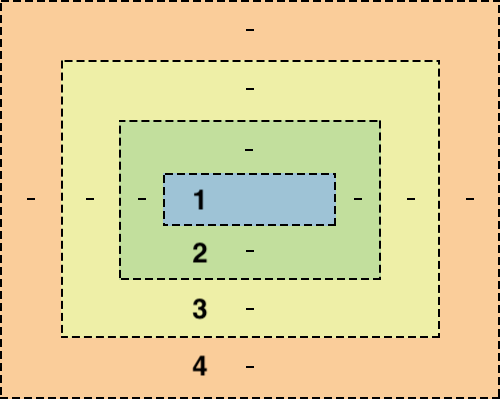

Introduction to programming
HTML
Web pages and servers
Most of the time your browser recieves web pages by communicating with servers over the internet.
Servers are computers that aren't fundamentally different from a normal computer, BUT they have programms running on them
that answer browser requests. The power of the internet is that you can connect to a file or document on different server.
A web page can contain information, videos, images, fonts or program code from the same web server or other web servers.
When you go to a webpage or follow a link your browser makes a request to the server asking for a particular document by
name. The server sends a response back to the browser containing that document. Or if it can't find that document,
it sends an error message instead. The rules for how these responses work are called the Hypertext Transfer Protocol (HTTP)
This is why web addresses start with HTTP or HTTPs (Hypertext Transfer Protocol) - telling the browser how to talk to the server.
The difference between addresses with http: and https: is whether the browser uses
encryption to keep your data private (the S stands for Secure).
When first making a website you won't need this yet, as you can open local html files in your browser. However, later when
publishing a website to the world, this will require uploading the file to a web server.
So what goes into web page?
Html or Hypertext markup language provides the structure and text for web pages. When your browser is opened, the first
thing that a server will send to it is a piece html.
HTML and programming
HTML is a good place to start thinking about programming because it lets you practice ideas that are essential to programming while allowing for quick feedback on what you're learning in a web browser. There are some key concepts in programming:
- Syntax: The grammer rules of a language - how you put the code togehter
- Formalism: "computers are stupid" - computers take code completely literally (like Drax from garudians of the galaxy!)
- Nesting: where information is organized in layers, or where objects contain other similar objects.
There is a lot of information to help in the learning process and documentation is widely available through a quick google search. You can learn a lot about HTML by looking it up on The Mozilla Developer Network
Text editors
HTML and programs are written in text files. Text files contain nothing but characters. No special typeography, photos, icons or other images basically anything you could write on an old fashioned type writer. HTML files are only made up of text and the layout of the web page on the browser shown to a user, is put together based on the code in that text file. A text editor edits plain basic text files. There are various different text editor programs specfically made for creating code. These include Atom (created by Github) and VS code (created by microsoft)
When you load a file into an programmers text editor, you'll often see it displayed with colours and special formating which is called syntax highlighting. This is not diplayed in the file itself but helps to use the correct grammer when editing files. When saving a file it's conventional to use a particular file extension or ending which indicates the file type( i.e .py or .html). This helps editors and browser treat the file correctly.
The job of html
Html documents are the building blocks of the web. The web is basically made up of these documents and they can do a number of things. This is broken down into different parts.
- Text that the user will actually read in the browser
- Markup which tells the browser what text should look like or how it's arranged and within markup there can be...
- References to include other documents and files like images and videos
Markup
Markup is just text that has a special meaning. In html most of the text looks like this:
This is a <strong> awesome </strong> example of html.
It has less than and greater than signs that set off the name of a keyword such as 'strong'. The word
strong inside these symbols is a tag. This whole unit with two matching tags and some text in between is called
an element.
Another example is the 'em' tag: <em> emphasise! </em> which stands for emphasis.
It means the text inside should be emphasised which usually means it's displased in italics.
Breaks and empty elements
Whitespace includes spaces, tabs, and line breaks. When the browser displays an HTML file, it treats a run of whitespace as a single space character.
In order to create a line break that will show up in the browser, use the <br> tag.
There is no closing tag for the br tag because there are no contents inside a line break.
Elements like this are called void or empty elements.
One other example of this is:
<img src="https://website.com/200.png alt="wesbite-logo">
Paragraphs
The Br tag is great for creating line pages in poems for examples. However a lot of text across the internet are articles journals and information that are contained in paragraphs. To make a pragraph in html we use the<P> element which
stands for paragraph. It is a regular tag, and whenver you're wiring regular elements in html the p tag sould be used.
Typographic elements
Typographic elements are used to say that the browser should display text in a different way
example1example2
<mark></mark>Highlights text<sup></sup>Makes text superscript<sub></sub>Makes text subscript
Originally, HTML started out as a tool for scientific and academic work; and these are really useful for science and math, like writing x2+3x+4 = 1 or chemical formulas like H2O.
Nested elements
Nesting is the idea that objects can lie within others. Similarly to a russian doll set. Elements on a html page can go
inside other elements however, they must follow certain rules.
The top level elements in a html document are things like; paragraphs, headings and big divions. Inside the top level elements
smaller elements such as bold, italicising, ordered/unordered lists etc. Any of the smaller elements can be put inside
another too. For instance you can have text that is both emphasised and highlighted.
This comes with some exceptions i.e a paragrpah can't be nested inside a paragrpah and elements cannot overlap.
Headings
HTML has several elements for headlines or section headings, starting with <h1>
for the largest headlines and going down to <h6>for the smallest.
Like with the p element, heading elements create a little bit of space (margin) around themselves.
Block and inline
There are two different ways in html to break text into multiple lines. the <br> and <p> element. So what's the difference?
The <br> tag is just to break the line. The paragraph tag not only contains the text, but also creates a invisible box around the text
which is called a block.
This tells the browser to create a box around the text, blocks are heaviy involved in how the browser lays out text on the screen and It have both
height and width.
Elements that don't create this block are called inline elements. Below are some examples of both:
For reference, there is a full list of all the block and inline elements in html:
The div element
The <div> is short for division, because that's what this element is for—you can use it to divide up the page
into different sections. Like the paragraph <p> element, the division div element has an invisible box around it—and just like <p>
it can have a border, a margin, a width, a height, and so on. But a <p> element is specifically meant to contain text.
In contrast the <div> element is a generic container for whatever other elements you might want to put inside and you can use it
to organise the content, dividing the page into sections.
Lists and implied close tags
There are a few HTML elements that are always used inside certain other elements, they don't make sense on their own.
For example the list or <li> element is one item on a list (e.g table of contents). A list item
can not display on its own. There are two types of lists, ordered and unordered.
Ordered lists are usually displayed with numbers or letters, whilst unordered diplay bullet points.

So why can't list items be displayed outside of a list?
An <ol> and a <ul> list are displayed differently. Without the context, the browser
wouldn't know whether to display a bulleted list or numbered. However lists can be listed inside another list.
Because an <li> element can only occur inside a list, html doesn't actually require a closing tag. However the
<ol> and <ul> must have closing tags.
Web addresses
The web wouldn't be the web without web addresses, every page, image and link has one. This is how your browser links from one page to another. They're also a big part of how users tell their browser to go to a website in the first place. Whenever you put an image or link in your html, you'll do this using addresses. In the web standards there are technical terms for these addresses. A web address is called a Uniform Resource Locator, also known as a URL.
- Uniform= standardised
- Resource= a file or other data object
- Locator= address for finding something
This just means that it is an address that tells your browser how to locate a particular resource, a file for instance, in a standardised way.
Meaning that it is consistent. URLs usually have http or https in front of www. This is not always the case, the browser will still guess
you want to go a website. However in a html file more informaiton is needed - this is where fully qualified/absolute urls come in.
<a href="https://website.com">
HTTP/HTTPS tells the browser whether to use a secure encrypted connection to the webserver.
The URL of a file on your local system will start with file instead. All three options are all protocols(ways that the browser can get something.)
'://' - seperates the protocol from the domain name. In file documents there will be no domain name as it is not hosted on a web server.
After this is the file path - the name of the directory and the file.
When you're linking to the top page (or home page) of a site, the URL does not need a file path after the domain name—so you will just see a single slash at the end of the address:
http://en.wikipedia.org/
And often this slash will be omitted altogether:
http://en.wikipedia.org
This would still be considered a fully-qualified URL.
In contrast, if we look at the URL for a file on your local system, we must give the file path—in fact, most of the URL is the file path:
file:///Users/Kelly/notes.html
If we took away the file path from the above, we would just have:
file://
Which is definitely not a fully qualified URL.
Links and the <a> tag
The web is built on of hypertext which means that you have textual documents BUT, they also reference other docunents. On the web page
these are called links. The element for making a link is an anchor - an <a> element which anchors the link on the page.
The opening tag for the <a> element has an extra piece of code - href, like below:
<a href="https://example.net">The example page</a>
This is an example of a html attribute and it gives the html element extra meaning. The name href stands for
Hypertext Reference. It is used with the <a> tag and a few other
tags that link to a document. Attributes like href only go in the opening tag at the beginning of an element. The contents
of the element becomes the name a user clicks on to access the link, followed by a closing a tag.
The <a> element is an inline element. It doesn't create a box on the page. Links
normally have the appearance of a specially highlighted piece of text.
Adding images
Images are a large part of why the web is so successful. To incude images there is a html element to do this. which is
the <img> tag, short for image. It works much like the anchor tag for links but with some important differences.
The anchor tag uses a single href attribute and the value for this attribute is the URL of the page we would link to.
But the img elemnent uses two attributes. This is the src and alt attributes.
srcstands for "source" and it's the url of the image you want to appear on your webpage.altstands for alternate and it's the text description of that image.
Both of these attributes must be included as the source tells the browser the source of the image, and the alternate
tells the browser what text to show if it can't display the image. For example alt text will be used if the image is missing
from the server or if the users connection stops working before the image can be loaded, or for the visually impaired.
The img element does not copy the image file into the html file, it only tells the browser where to find the image file.
The image file still has to be some where (either the local computer or a web server).
The img element is a void element like br. There are no textual content or close tag for it.
Many websites have images that are also links: the browser displays an image, but then the user can click on that image to go to a different page.
The best way to do this would be to put an image element inside an anchor element like so:
<a href="https://google.com"><img src="glogo.png" alt="google logo"></a>
Files and relative URLs
So far when adding images to html we have referenced urls from the internet and different servers. But what if the image is on your local server?
You can put the file name in the image tag, as the browser looks at the src and when a full URL isn't seen (no ://) the browser has a rule
for what to do in this instance. The browser will look for the file name as a variation of the HTML document's own
URL. This is calle a relative URL, the browser will look for the img file in the same directory as your html doc.
This allows for a lot less typing and relative URLs are the reson why links only work by inputing https:// first. Because
in HTML a URL with no :// in it is always treated as a relative url.
Websites like placebear.com and placekitten.com are designed to make this super easy.
All you have to do to get an image of any given size is put the width and height of the image at the end of the URL,
as in https://placebear.com/200/300.
In summary The URL of an image may be an absolute URL, such as http://placebear.com/800/600, or it may be a relative URL such as images/wolves.jpg.
The !DOCTYPE tag
So far we have covered html fragments - snippets of the markup and syntax. A browser can display this but there a some things
to add to make them into a full html document i.e. a webpage.
How does the browser know what type of file it is? The file extension only tells part of that story. There have been various
different versions of html. We indicate what type of html we're using through a DOCTYPE tag, which is put at the very top of the document.
It looks like this:
<!DOCTYPE html>
This tag tells the browser that we're intending for this document to be treated as modern html as opposed to
those older version. This prevents a lot of problems when your html becomes more complex. Without this tag, browsers will go into what's called
"quirks" mode. Which is trying to be more compatible with older forms of HTML.
Documents: Head and Body
A full html documents actually has two parts a head and body. Every element so far
lives in the <body> tag. This is where the content goes. The <head> is where we put certain pieces of
important information about the document. Both the <head> and the <body> occur in a single
enclosed element called the <html> tag.
Here are a few things that can occur in the head of the document:
- The title - It tells the browser what title to put on a tab that's displaying the document. This is required
- The style sheet information - Tell the browser things like what fonts, colors and design elements.
- Scripts - programs that are run in the browser. This is how front-end web apps work
- Metadata - Other information about the page itself such as keywords for search engines (SEO)
There is also information that can go on the html tag itslef. E.g. noting what human language your document is written in:
<html lang="en">
This is useful for programmes that try to understand or pronounce the contents of the documents such as screen readers
for visual impared readers.
The grammar of HTML does not require that you literally write a <head> or <body> tag in your HTML code.
Many web developers do write these. However, if you don't, the browser will attempt to place them into your code itself.
It needs to put the head element around certain elements that belong there, such as title; and to put the body
element around the elements that form the document's body. This means that all the head elements must appear first,
and the body elements after.
You can't have a head element, such as title, in the middle of your document.
Validating HTML
Once you've written your document, how can you be sure that your file is spelled correctly and written grammatically. First you can load this in your browser however, whilst it may look fine in the browser it may have a mistake that your browser can deal with but other browsers can't. Fortunately there is way to check you file to make sure the html syntax is correct. There are tools called html validators that will check for all the details. Everything from tags being spelled correctly, to some of the tricky nesting rules. The best known validatory is https://validator.w3.org/. run by the World Wide Web Consortium (W3C). This is the organisation that writes the standards for html and other componenets of the web. There are 3 ways to use the validator service:
- If you're web pade is on a public web server, you can give the URl and it will download and check the html
- Upload the file
- Copy from the editor and paste it in.
The output will be a report detailing the errors in the html file if there are any.
Styling with CSS
Starting with style
CSS or cascading style sheets is how web pages get all the colour, decoration and fonts. Using CSS you can improve the look of html pages.
Developer tools
Something special built right into the web browser is called the 'developer tools' and it's something that every web developer spends a lot of time with. Every browser has this built in. If you right click anywhere on a page and select inspect this allows you to look at the HTML elements for everythin on this page. There are several different tabs:
- Elements
- Console
- Sources
- Network
- Performance
- Styles
- Even listeners
- DOM Breakpoints
- Properties
- Acessibility
Each of these tabs will let you look at a different aspect of what the browser is doing. For the meantime, the elements tab shows the HTML elements that make up the webpage. This looks a lot like the html source code. This elements view and the rendered web page are two different views of the same underlying data. The Elements tab isn't showing you the original HTML source code. It's showing you a sort of map or representation of how the browser sees the page. For instance, in Chrome, many pieces of text will show up in "double quotes", which aren't in the original source or in the rendered version of the page.
How to access Developer Tools in your browser
- Open the Chrome menu at the top right of the browser window (the three vertical dots), s elect and select Tools > Developer Tools, OR
- Right-click on any page element and select Inspect.
- Safari
- From the menu bar, select Safari > Preferences, and click Advanced.
- At the bottom of the box, check the "Show Develop menu in menu bar" checkbox.
- Choose Develop > Show Web Inspector.
- Mozilla Firefox
- From the menu bar, select Tools > Web Developer > Browser Console, OR
- Press Ctrl+Shift+J (Cmd+Shift+J on Mac).
Text to trees
There are things in html source code that don't show up on the screen i.e. the literal text in the tags that make up a html element. There are also things that show up on the screen/browser that don't appear in the html file, Such as the numbers in an ordered list. Between the html file and the browser, there is an intermediate step. The intermediate is a Data structure - it is an organised map of what's going to end up on the page. When we make a change to the CSS that doesn't change the structure of the HTML source code but it does change the source code in the data structure. It's also what developer tools lets us look at. Wnen the browser reads the HTML source it builds up a map in the computer memory of what all the elements are that it will need to put in the screen. This map shows which elements are nested inside other elements. Doing this step first makes it much more practical to lay out the elements on the screen. Like making an outline of the page. This kind of structure is called a tree structure because each element can have brances coing out of it to other elements. For each element there will be branches going to the elements nested inside. Like the LI items inside an ol or ul. The particular tree strucure that the browser builds out of HTML is called the DOM or Document Object Model. The DOM has a tree structure for each HTML element, image, piece of text or other objects inside the web page.
Tree Structure
Tree structures will show up a lot in your code, they're really common in computer science and in how programmers talk about the way computer languages work. So it is useful to learn about the terminology of tree structures.
- Nodes:A tree is made up of parts called nodes or elements.
- Branches:This describes the connections bewtweem nodes.
- Root:This is the top or start of a tree. In a HTML document the html element is the root of the tree
Nodes of a tree have relationships between them, and involve nesting. For example the HTML element has the head and body as it's children. The head note has title as a child and so on and so forth.It is important to remember that the tree structure is not a diagram but it is a data structure - a way that information can be organised. There are a few rules that are always true for tree structures.
- A tree starts with one node that is the root.
- Each node can have branches that lead to other nodes (its children)
- Each node has only one parent, with the exception of the root.
- Though each node can have any number of branches going out, it can only have one branch coming in.
- A new branch can never point to a node that's already in the tree.(another way of saying each node has only one parent)
There are tree structures everywhere in computer science, and the DOM is just one example.
Trees to Boxes
Video - Trees to Boxesyou can find the example shown in this video here. Earlier on we referenced that a browser takes a html document and turns this into a trees structure (the DOM). How does it get from here? into the 2D layout? Every element that appears on a page lands inside boxes and it is controlled by tree structure with a little help from the CSS. Whether the boxes are transformed horizontally or vertifcally can be controlled in the CSS.
Styling HTML directly - Video
One way we can add style to a website is to visit each node of the tree and add the style we want. There is a style attribute that we can put on html opening tags to do just that. an example of this is:
<li style="colour:green"> Trees
The problem with doing it this way is that it's incredinly repitious. Also if there is a mistake in one place it is hard to catch. Generally in computing, if it is possible to avoid repeating yourslef then it should be done. This saves typing and reduces error. What CSS allows us to do is pull all the style elements out and put it into <style> </style> elements within the head element. The style information we put here will be applied throughout the document and as the browser builds up the picture on screen fom the dom tree, it'll use these style rules to colour, shape and layout the page.
N.B.
By the way, when styles are applied directly to an HTML element using the style attribute, these are called inline styles. The idea is that the style is being applied directly in the same line as the HTML element that it is styling. (In contrast, when we use the style element, the style is separated—it's not in the same line.)
There are also other style elements such as text align: center; These attributes can be placed one after another within a HTML element. We seem to be using quotes whenever we have an attribute value (remember, the attribute value is the part that comes after the = sign). For example, when we make a link, we put quotes around the value of the href attribute. The quotes indicate where an attibute value starts and stops, even if there are spaces inside it. Without the quotes, the browser can sometimes still figure out where the attribute value ends. So it's possible to get away with leaving the quotes off, in some cases.
But if there is a space (and no quotes) then the browser will get confused and think the attribute value has ended right before that space.
So is CSS its own seperate language or is it just part of the HTML language?
We haven't talked about this too much, but CSS really is a different language from HTML. That means that it has its own syntax (or grammar), which is different from the syntax for HTML.
CSS syntax - Video
A CSS rule-set is made up of two parts:
- SELECTOR = which HTML elements will the ruleset apply to?
- DECLERATION BLOCK = How will the ruleset modify these elements? - inside curl braces that contains rules.
li { color: green; } The above is a CSS ruleset that will trun all of the list items green The selector is li and there is one entry in the declerator block. CSS rules are always written like this.
.weird {
color: purple;
font-size: large;
The .weird selector will apply to any element with a class attribute equal to weird. Each of the rules in the decleration block have a description which is called the 'property' that the rule is affecting There is a colon followed by a value which is giving a property. The value is always followed by a semi-colon. The syntax of CSS doesn't look anything like the syntaz in HTML. This makes sense because they are accomplishing different things. A piece of html describes a tree structure made out of elements. A CSS delcleration highlights a particular element and here are styles to apply to it.
Selectors: Type
So a CSS selector tells the browser whcih elements the rule will affect. There are a few different kinds of selectors that you can use.
The simplest selector type is a TYPE selector - just the name of one type of html element such as p, body, em etc. Type selectors are really useful when you want to apply a style widely across the web page.
Selectors: Class and ID vid
You don't always want to style all elements of the same type in exactly the same way. For instance, if your document is an article with a sidebar. You may want to apply a different style to the paragraph elements versus in the sidebar. This can be done by placing a special attribute in the HTML tags and this is the class attribute.. In computer language a Classis a common word for a group of things with the same characteristics The way you apply a CSS ruleset to a class is to write a selector that starts with a dot (.). Classes are what you should use if there are several elements you want to apply a style to. If you know there will only be one element to apply the style to, you can make this clearer by using the ID attribute instead. There can only be one element with a particular id on the page. In contrast there can be any number of elements with the same class. Id values come from the same place that class values do, you make them up. To apply a style elements by id instead of class you need to use a hash # instead of dot selector.
Selectors: combining
You may want to combine selectors i.e make em text red but only if part of a list part of the em. This is how you would do that
li em {
color: red; }
It is important to first write the parent element and then the child element. Together this selector means 'Select every em element that is a child of an Li element'. This kind of selector uses a space to created a combined selector This 'li space em' is called the descendant selector Want to learn much more about selectors? Check out the MDN documentation.
Vocabularly Review
Here are some of the CSS terms we've come across so far:
- DOM, or Document object model, is a tree structure with a node for each HTML element, piece of text, image and any other object in the web page.
- Selectors are one part of the CSS ruleset. They indicate which HTML element(s) the rule is for.
- Declaration blocks are the other part of the CSS ruleset, they say how the rule will modify the elements indicated by selectors.
- CSS rules are composed of a selector followed by a declaration block.
- type is the simplest type of selector. It indicates the name of one type of HTML element (such as em or li)
- Classin HTML is an attribute that groups elements together that you want to have the same style.
- idis an attribute that must be unique to a single element, used to identify it.
Selectors Review
We've now learned about three kind of CSS selectors: type, class, and ID!
Type selectors are used to apply a style to a particular type of HTML element, like h1 or body. Type selectors are written using just the type name.
Class selectors are used to set the style for multiple HTML elements that have a particular value for the class attribute. You can name a class anything you want! Class selectors are written with a dot before the class: for elements such as <p class="blue">, the class selector is .blue.
ID selectors are used when the style is being applied to one HTML element, which has to have an id attribute. There can be only one element with a particular id on a page. You can also choose any name you want for an id, just like a class. ID selectors are written using a # sign: for an element such as <div id="sidebar">, the id selector is #sidebar.
Whats so "cascading" about CSS? find out here
cascading has to do with how each node in the dom tree gets its styles defined Any style property defined on a node will apply as a default to all that nodes descendants. Each style property that's defined on a node will cascade or spill down the tree or to that node's children and descendent. Each node will inheret style from the parent node, however the most specific selector property will apply.
Units: video
One of the things we can use CSS for is to change the layout of elements on the page. This means we can move them around, change their sizes, reshape them, and change the way they get positioned around each other. In order to talk about where those elements are on the page, we need to have units of measurement. In CSS there are various units we can use. The basic unit of measurement in CSS is the pixel or px for short. Pixels are the unit that you'll see developer tools using tyo measure the size of the boxed element. Normally, a pixel is a single dot of colour on your screen. But computer screens don't all have the same size pixels. In particular, he actual hardware pixels on new mobile devices are really tiny compared to the pixels on older computer screens. So, in CSS, the unit called pixel or px isn't really a hardware pixel instead it's defined as: being one-ninety sixth of an inchNintey-six pixels per inch was the common screen resolution when CSS was being standardized. So that's what the CSS px unit was set to. There are 96 CSS pixels to the inch, which means there are 37.8 pixels to the centimeter.
There are other units in css too. One traditional typographic unit is the point, or pt. i.e 12 point font (72 pt = 1 inch). in CSS, points aren't only for font size, but that is where they are most common.
Whilst pixel and point are based on inches, which is a real world measure of length, other CSS units are relative to the size of something else on the page. One of them is em and it is equal to the font size of the text in the element. So if you're using an 18 point font them 1em is 18 points.
N.B
The CSS unit em is named for the size of the letter "M", and comes from print typography. The HTML element <em> is short for "emphasis". They're spelled the same, and often pronounced the same, but they have no other relation between them at all.
Boxes: Video

We know that when the browser renders html, evey element has an (usually) invisible box around it. These are the boxes you see when looking around pages in developer tools. There are a lot of things we can set about any of these boxes using CSS. There is:
- Width
- Height
- Paddding - the space around the contents of the box
- Border - which is outside of the box, this is usually invisible.
- Margin - the space the browser makes between this box and other boxes.
Each of these is a property or selector that you can set a value, measured in CSS units such as pixels or m's. It is also important to note that the padding, border and margin aren't included in the width of an object. (so they add extra width around the sides of the box!).
Percentages
Often in CSS, we don't want to make a box exactly 200px. Instead you might want to specify how much of the page a box should occupy. However, we don't know how wide the users browser window is. So we cannot say a number of pixels or em for this. We can use a percentage. When we set the width or height of a box to be 50%, we're asking the browser to make it that fraction of the width or height of the box it's inside. For boxes at the top level of our document that makes it 50% of the width of the whole page. For a box within another box, it would be 50% of the width of it's parent box. BUT! by default this doesn't include the border and it never includes the padding. CSS also uses percentages for something pretty different - scaling things up or down.
For instance, let's say we want to make strong text even stronger than usual. Can do this by defining a style on the strong element to make the font-size 120%. This means no matter what the actual font-size in points is of the text any text in strong will be expanded to 120% of the strong node's parent font size.
Seperating style
There are a couple of ways that we can tell the browser to apply CSS styles to our html. One of them we've gone through alread - putting the CSS code in the style element. However this can get rather messy. It's common for websites to have many HTML documents, and we want to apply the same styles to all of them. Copying the same CSS code to each of is a waste of space. Another way we can do this is to put the css in a seperate file and link to it in the HTML file. The wat we do this is to put a special style in the HTML head element.
< link rel="style" href="URL of the stylesheet file/filename"> If we're using a style sheet that is somewhere else on the web we'll put a ful URL in here but, if the css file is in the same directory as out html file, then we can just put the file name. When the browser loads this CSS file it will automatically load the style.css file and apply those styles to the elements in this file.
At this point, you've learned three different ways to apply CSS styles to your HTML elements. It's important to remember:
Stylesheet or style element — not both!
Color
So far we've specified colors with words like red and purple but there are only so many words for colors. You should be able to make any colour you want, and you should. Computer screen by mixing red, green and blue light. For each primary you can specify how much of each you want in the mix. Anywhere from 0 to 100% of full brightness.
For inance if we mix 100% red with 50% green we'll get a bright orange. One way we can write this in CSS is as RBG:
body {
background-color: rgb(100%, 50%, 0%); } To make gray, use equal amounts of red, green, and blue. But if all three colors are equal to zero, you'll get black; and if all three are the maximum value (255, FF, or 100%) you'll get white.
There are several different ways we can write colors in CSS.
.green {
color: #008000; }To understand the last two methods of using colors in CSS you need to know a bit more about how computers store color information in web browsers and most other applications. Each of the primary colors can have 256 possible values. This is beacuase each color is stored in a single byte - (a space in memory that can hold a number from 0 ro 255). We can writer a byte values as a number from zero to 255 but we can also write it as a number in hexadecimal or hex base 16. In hex each digit can go from 0 to 9 and then from A to F. Hex codes are much harder to figure out but they are traditional on the web.
Whilst these methods look different they are similarly describing the amount of red, green and blue that needs to be mixed to make a particular colour. Using a color picker is a great help to decipher the numerical code for the color you would like t implement. Fortunately this is built right into your browsers developer tools
We've been using the words "amount" and "intensity". What we really mean by this is the brightness of the light. Higher values indicate brighter (more intense) light, and lower values indicate darker (less intense) light.
By mixing different levels of red, green, and blue, we can getdifferent colors, at different levels of brightness.
By the way, this way of thinking about light isn't limited to our code—if we were to get real, physical lights and overlapthem, we would get similar results.
Red, green, and blue light overlap to create secondary colorsand white light.
OK, but what about hex values, like #00cc66 or #99ccff?
These look strange, but they work the same way. Each pair of digits is a number that gives the intensity of red, green, or blue. The reason these values look strange is because they're in a different number system—instead of the decimal system that we are used to working with, these numbers are given in the hexadecimal system.
You don't need to have a deep familiarity with hexadecimal to be able to use hex color values on your pages.
Hexadecimal is not as complex as it might appear. Instead of having 10 digits (0, 1, 2, 3, 4, 5, 6, 7, 8, 9), hexadecimal has 16. Since we don't have 16 number symbols, hexadecimal counts up to 9 and then starts using letters.
The numbers are the same until we get to 10, which is represented as A in hexadecimal.
Like we mentioned, each pair of digits in a hex RGB value gives the intensity of red, green, or blue. This ranges from 00, meaning zero intensity, to ff, meaning maximum intensity. In fact, the number ff is the same as the decimal number 255.
Althernatively the W3 schools colour picker is a useful color picker.
Fonts
One of the things that can really make a website more distinctive, is to use fonts that work well together.
CSS lets you change all sorts of things about the font in which your text gets displayed. What is usually referred to as a font, in miscrosoft word for instance, CSS actually calls this Font-family This is name of a type face such as Times New Roman, Helvitica or Impact..
Applying a font-family rule to an element will make text in that element show up in that font. However, not every device or browser has the same fonts. If you ask for a font family and the user's device doesn't have it. CSS won't do anything, it'll leave the text in the default font which is usually Times. CSS also offers generic font families. There are five of these named for 5 general catagories of fonts:
- Serif
- Sans Serif
- Cursive
- Fantasy
- Monospace
Generally these are used as a fallback in case the browser doen't have avvess to a particular font. Because of that CSS lets us wrtite a font stack - A list of font alternatives; the browser will pick the first it can. We can also control other font settings besides the font-family
- Font size - how big the text is, measured in points(usually)
- font-weight - with the value bold
- font-style - can be italic
- text-decoration - with the value underline
There is a property called font that lets you combine all of these properties into a single line. so instead of writing all these font properties, you can just write this:
p { font: bold 14pt Georgia, serif; }Unfortunately you do have to write this in a specific order.
If you want to use some interesting fonts, but are worried they won't be installed on all computers, here's another option: You can try out Google Web Fonts.These don't have to be installed on the user's computer in order to work!
Something you may have wondered is why we have both and font-weight: bold;. If you want to bold some text, it seems like you could use either of these—and they would have the same results.
And the same seems to be true of and font-style: italic;.
Why would we need CSS style properties like font-weight and font-style, when we already have HTML elements like em and strong?
There are a couple of reasons for this.
The historical reason is that HTML was created before CSS, but the engineers who designed CSS wanted it to provide more customization than HTML alone did. The default way to show emphasis is by styling it as italic. But we don't have to do it that way — we can use CSS to override the default styles. For example, we could say that we want emphasized text to be red, or in a larger font size.
But the differences go deeper than that. HTML code isn't only used by browsers that display on the screen. It's also used by search engines, smart speaker apps, and other programs. Those programs can't see "boldface" or "italics", but they still need to know which text on a page is more important.
The em and strong elements specify the meaning of their contents. In contrast, the CSS style properties are just specifying the visual appearance.
To repeat this in more general terms: the HTML indicates what the contents mean, while the CSS indicates how the contents should look. Web programmers refer to this as semantic markup — using markup to indicate meaning, not just appearance.
For example, if we place some text inside an em element, this is our way of indicating that this text should be emphasized in some way. But to a program that's reading the page aloud to the user, it won't use italics; it will use tone of voice. And even in a page that _is_ displayed to the user, you might want it to be emphasized using color or another property, instead of with italics.
Containers
Earlier, we saw that we could put boxes inside other boxes. If those boxes are div elements, then we simply nest the div elements inside one another:
<div>
One reason to nest boxes like this is so that you can use one of the boxes as a container for the other boxes.
<div>
</div>
</div>
Flexbox
The default way that the browser lays out the boxes onto the page was designed for webpages that work like traditional documents. They're made of things like headlines, paragraphs and lists from top to the bottom. This works greqat for pages such as wikipedia articles, scientific papers or stories. However, a website today can be a lot more than a document. It's a photo gallery or a messaging service, or a game. So the kind of layout that makes sense for a document doesn't always make sense for websites of today. Applications need a much more flexible sort of layout than an article or novel does. CSSS has grown to support that change over time. One of the biggest improvements in the last few years is a feature called the Flexible Box Layout or Flexbox for short. It's a way to as CSS to change the rules for how boxes are laid out onto the page in a way that's more flexible than the usual document-based approach.
An example of how to apply this is the tic-tac-toe game
- X
- O
- X
- O
- X
- O